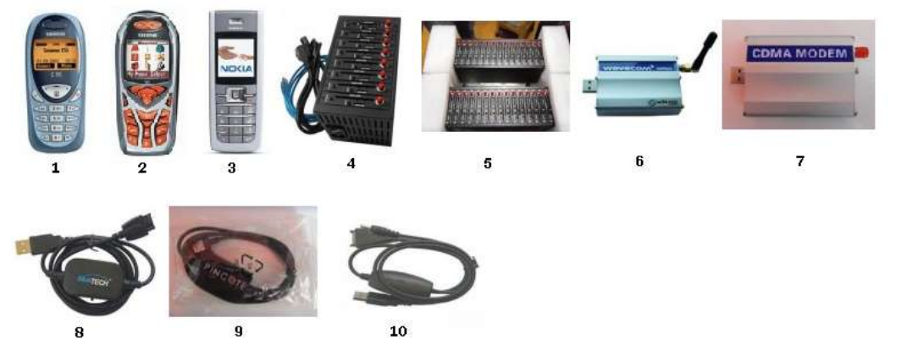

Hal yang perlu disiapkan
Komputer
Kebutuhan minimum Komputer:
- Sistem Operasi:
Windows 2000 SP4, Windows Server 2003 SP1, Windows Vista, Windows XP (disarankan XP3), Windows 7, Windows 8, Windows 8.1, Windows 10. - Prosesor:
Intel Pentium III 600 MHz. Disarankan Dual Core atau lebih tinggi. - RAM minimal:
1 GB. Disarankan 2 GB atau lebih besar.
HandPhone atau Modem
HandPhone atau Modem yang didukung Software OtomaX antara lain:

Keterangan:
- Siemens C55
- Siemens M55
- Nokia 6235, 2865
- Wavecom Simbox 8 Port
- Wavecom Simbox 16 port
- Wavecom Single M1306B
- Wavecom Single CDMA
- Kabel data merk BlueTECH untuk HP Siemens C55 dan M55
- Kabel data merk Pincote untuk HP Siemens C55 dan M55
- Kabel data A70 untuk Nokia 6235
Beberapa Modem Stik juga didukung OtomaX, contoh: Huawei E220, E153, E170, E172
SIM Card
SIM Card diperlukan untuk dijadikan Dongle OtomaX. Dapat berupa SIM Card Telkomsel, XL, Indosat dan lain - lain. Pastikan kondisi fisik chip dalam keadaan baik luar dalam.
Software
Untuk menginstall Software OtomaX diperlukan Software Pendukung, yakni: Microsoft SQL Server Express dan Microsoft SQL Server Management Studio Express. Selain itu juga dibutuhkan Driver HandPhone atau Modem sesuai yang dipakai (biasanya disertakan dalam CD saat pembelian). Dan terakhir Software OtomaX itu sendiri. Untuk Software OtomaX Anda dapat menggunakan OtomaX Free Edition.
Software - software di atas dapat Anda download disini. Silahkan download sesuai petunjuk yang ada.